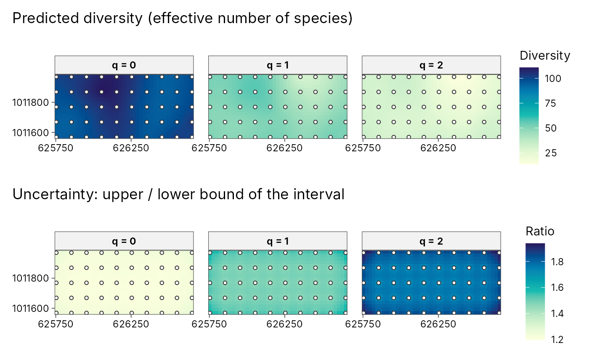

Plot diversity surfaces and their uncertainty
plot_diversity_surface.RdDraws the result of geo_diversity_surface(): one panel per order q
(predicted diversity) and, with uncertainty = TRUE, a second row with
the relative width of the prediction interval (upper / lower), so you can
see where the map is well supported by data. Sampled sites are overlaid.
Arguments
- x
Output of
geo_diversity_surface().- uncertainty
Add the uncertainty row?
- palette
Sequential palette name from
grDevices::hcl.pals().- sites
Overlay the sampled sites?
Examples
e <- new.env()
utils::data(BCI, BCI.env, package = "vegan", envir = e)
trees <- tibble::tibble(
plot = rep(sprintf("P%02d", 1:50), ncol(e$BCI)),
species = rep(colnames(e$BCI), each = 50),
n = as.vector(as.matrix(e$BCI))
)
trees <- trees[trees$n > 0, ]
plots <- tibble::tibble(
plot = sprintf("P%02d", 1:50),
x = e$BCI.env$UTM.EW, y = e$BCI.env$UTM.NS
)
set.seed(1)
surf <- geo_diversity_surface(trees, plot, species, n,
sites = plots, lon = x, lat = y, crs = 32617, grid = 40, nboot = 20
)
plot_diversity_surface(surf)
